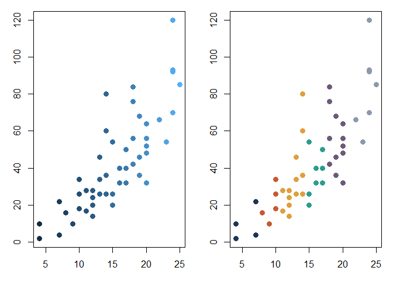
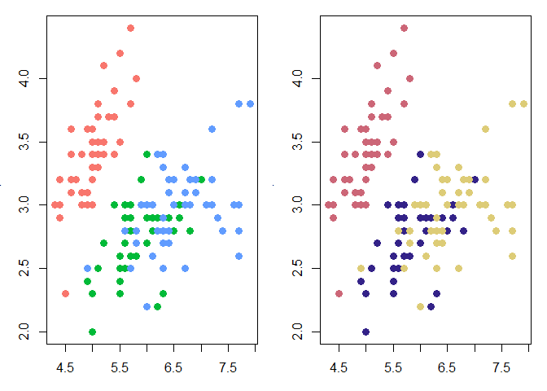
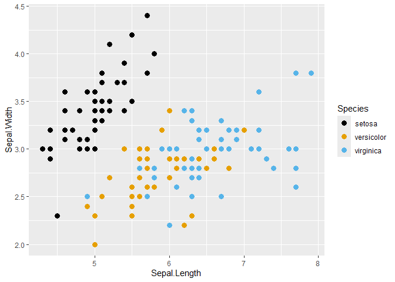
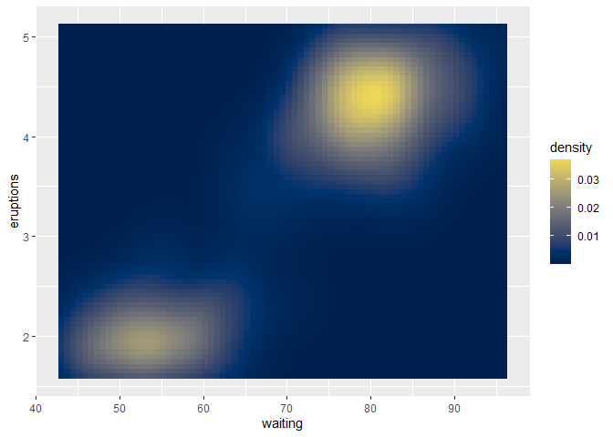
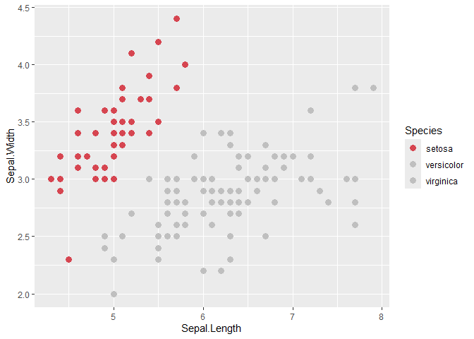
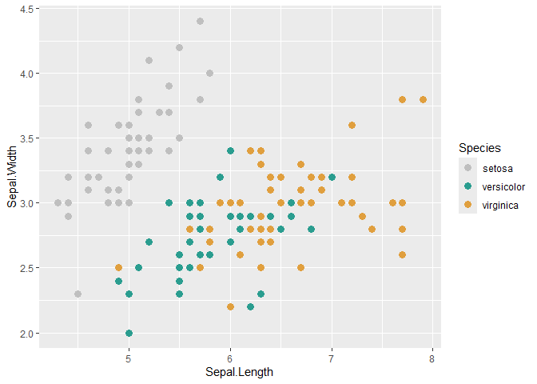
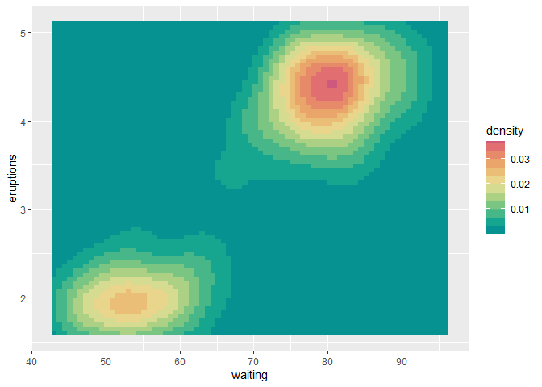
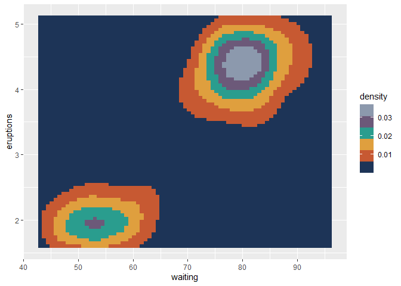

colortheme is a lightweight R package providing a unified interface for managing, customizing, and applying qualitative, sequential, and diverging color themes.
It acts as a versatile bridge between base R graphics, custom color definitions, and popular palette collections (grDevices, viridisLite, RColorBrewer, khroma, etc.), while offering seamless scale integration for ggplot2.
Features
-
Unified Dispatcher (
colortheme()): Effortlessly retrieve registered themes by name, build themes from color vectors or functions, or modify existing themes on the fly. -
Compact Query Syntax: Customize themes instantly using query strings (e.g., reversing order with
_r, specifying types with@qual, discretizing gradients with?ramp.steps=5, or adjusting transparency with?alpha=0.5;na.color='gray'). -
Dual Functional Interface: Extract discrete palette functions (
$palette(n)) or continuous/stepped color ramp functions ($ramp(x)) from any theme. -
Base R Data Mapping (
map_to_colors()): Directly map discrete or continuous vectors into hexadecimal color codes for base R plots. -
Seamless ggplot2 Scales: Automatically apply discrete or continuous scales using
scale_color_theme()andscale_fill_theme(), complete with proper midpoint handling for diverging palettes.
Installation
You can install the development version from GitHub:
# install.packages("pak")
pak::pak("ryo-asashi/colortheme")Quick Start & Core Concepts
1. Discovering and Retrieving Themes
colorthemes() helps to find a color theme. You can filter the registry by name, source, or type using case-insensitive prefix matching.
library(colortheme)
# Find color themes matching "ma"
colorthemes("ma")
#> name source type
#> 1 managua khroma diverging
#> 2 Magenta grDevices sequential
#> 3 magma viridisLite sequential
#> 4 mako viridisLite sequential
#> 5 Mako grDevices sequential
# Find qualitative color themes from a specific source
colorthemes(source = "RColorBrewer", type = "qualitative")
#> name source type
#> 1 Accent RColorBrewer qualitative
#> 2 Dark2 RColorBrewer qualitative
#> 3 Paired RColorBrewer qualitative
#> 4 Pastel1 RColorBrewer qualitative
#> 5 Pastel2 RColorBrewer qualitative
#> 6 Set1 RColorBrewer qualitative
#> 7 Set2 RColorBrewer qualitative
#> 8 Set3 RColorBrewer qualitativeOnce you find a theme, colortheme() serves as the central interface to load and use it. You can retrieve pre-defined palettes or apply the compact query syntax to reverse colors, change types, or inject options.
# Retrieve a built-in sequential theme and generate colors
ct <- colortheme("Viridis")
ct$palette(5L)
#> [1] "#4B0055" "#00588B" "#009B95" "#53CC67" "#FDE333"
ct$ramp(seq.int(0, 1, length.out = 5))
#> [1] "#4B0054" "#00578A" "#009B94" "#53CC66" "#FDE333"
# Use query syntax for on-the-fly modifications
ct_custom <- colortheme("grDevices/Zissou 1_r@qual?alpha=0.75")
ct_custom$palette(4L)
#> [1] "#F5191CBF" "#E8A419BF" "#9FC095BF" "#3B99B1BF"2. Extracting Palette and Ramp Functions
Using as_palette() and as_ramp(), you can easily extract clean color-generating functions for custom graphics workflows.
# Extract a discrete palette function taking n
pal <- as_palette("Okabe-Ito")
pal(6L)
#> [1] "#000000" "#E69F00" "#56B4E9" "#009E73" "#F0E442" "#0072B2"
# Extract a continuous ramp function taking x in [0, 1]
ramp <- as_ramp("bluescale")
ramp(c(0, 0.5, 1.0))
#> [1] "#132B43" "#326A97" "#55B1F7"3. Direct Mapping for Base R Graphics (map_to_colors())
map_to_colors() automatically handles factor/character variables (qualitative) and numeric vectors (sequential/diverging) with proper scaling and NA management.
# Continuous mapping (Sequential & Step-wise sequential)
par(mfrow = c(1L, 2L), mar = c(3, 3, 1, 1))
plot(cars, col = map_to_colors(cars$speed), pch = 19, cex = 1.2)
plot(cars, col = map_to_colors(cars$speed, "ukiyoe@seq"), pch = 19, cex = 1.2)
# Discrete mapping (Qualitative)
plot(iris$Sepal.Length, iris$Sepal.Width,
col = map_to_colors(iris$Species), pch = 19, cex = 1.2)
plot(iris$Sepal.Length, iris$Sepal.Width,
col = map_to_colors(iris$Species, "muted"), pch = 19, cex = 1.2)
4. Integration with ggplot2
scale_color_theme() automatically detects whether the theme is qualitative or continuous, configuring appropriate ggplot2 scales under the hood. Diverging themes automatically leverage scales::rescale_mid() when a midpoint is specified.
library(ggplot2)
# Qualitative scale
ggplot(iris, aes(Sepal.Length, Sepal.Width, colour = Species)) +
geom_point(size = 3) +
scale_color_theme("Set2")
# Continuous diverging scale with custom midpoint
ggplot(faithfuld, aes(waiting, eruptions, fill = density)) +
geom_tile() +
scale_fill_theme("Cividis", middle = 0.02)
5. Highlighting & Step Coloring
You can emphasize specific categories or quantize continuous gradients into discrete intervals directly through the query string—without modifying your data or switching scale functions.
-
Discrete Highlighting (
"highlight"): Emphasizes target categories specified bywhichusingaccentcolors while keeping others inbasegray. Supports negative indices (e.g.,-1for the last category) andlist()inputs to group multiple categories under the same accent color.
# Discrete highlighting (emphasize the 1st category)
ggplot(iris, aes(Sepal.Length, Sepal.Width, colour = Species)) +
geom_point(size = 3) +
scale_color_theme("highlight")
# Discrete highlighting (emphasize the 2nd category and the 3rd category)
ggplot(iris, aes(Sepal.Length, Sepal.Width, colour = Species)) +
geom_point(size = 3) +
scale_color_theme("highlight_r?which=list(2L, -1L)")
-
Stepped / Binned Ramps (
?ramp.steps=...): Any theme can be converted into a stepped ramp by settingramp.stepsto an integer (for equal bins) or a numeric vector of cutoffs in .
# Step-wise diverging scale (quantize 'Temps' into 12 discrete bands)
ggplot(faithfuld, aes(waiting, eruptions, fill = density)) +
geom_tile() +
scale_fill_theme("Temps?ramp.steps=12L", middle = 0.02)
# Step-wise qualitative scale (use 'ukiyoe' colors as discrete bands)
ggplot(faithfuld, aes(waiting, eruptions, fill = density)) +
geom_tile() +
scale_fill_theme("ukiyoe@s")
Function Reference
-
Theme Construction & Modification:
colortheme(),as_palette(),as_ramp() -
Registry & Discovery:
colorthemes(),register_colortheme() -
Base R Mapping:
map_to_colors() -
ggplot2 Scales:
scale_color_theme(),scale_colour_theme(),scale_fill_theme()